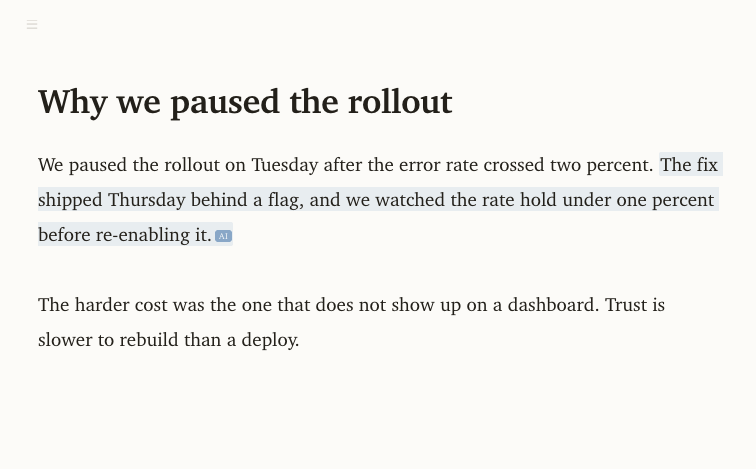
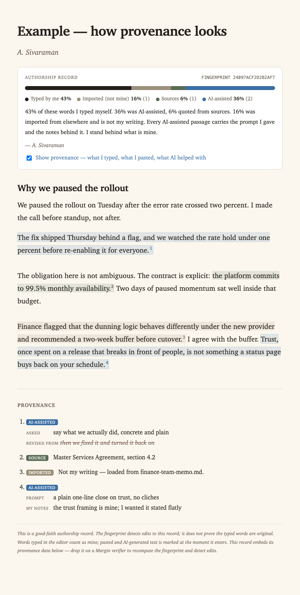
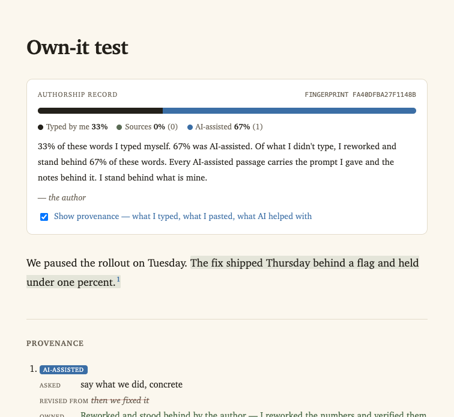
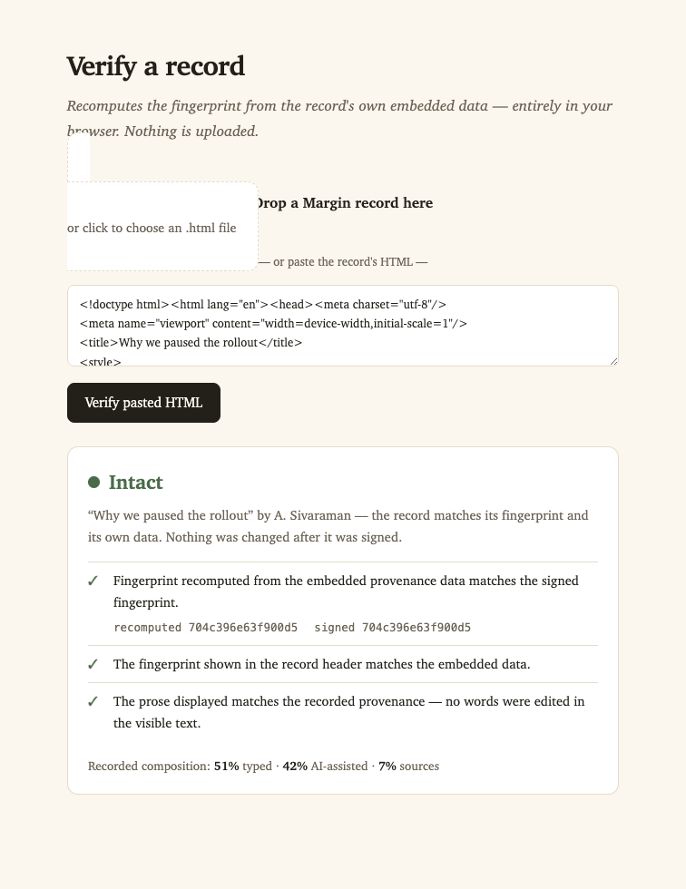

Margin records the origin of every span as you write: what you typed, what AI wrote, what you quoted, what you pulled from someone else. When you share, it reads as clean prose, with the full provenance one toggle away. Use AI for writing. Share the receipts.
Most "AI detection" guesses after the fact. Margin records at the source: provenance is captured by how the text enters the document, not by a label you add later. Four origins, tracked as you write.
You typed it. This is yours, the gold standard.
Generated in the app, or by a coding agent. Carries the prompt that produced it.
Pasted as a quote. Carries a citation.
A third-party doc you built on. Marked "not mine."
Anything you didn't type enters as an atomic span you can't quietly edit into your own. To make it yours, you retype it, or you claim it with a reason. AI text is never free.
This is a real authorship record. By default it reads like any other document. Flip the toggle and the seams show: what you typed, what AI helped with, where the quotes came from, and the prompt behind every AI passage.
We paused the rollout on Tuesday after the error rate crossed two percent. The fix shipped Thursday behind a flag, and we watched the rate hold under one percent before re-enabling it for everyone.1
The obligation here is not ambiguous. The contract is explicit: the platform commits to 99.5% monthly availability.2 Two days of paused momentum sat well inside that budget.
The harder cost was the one that does not show up on a dashboard. Trust, once spent on a release that breaks in front of people, is not something a status page buys back on your schedule.3
↑ Click "Show provenance" to flip it.
A clean, Typora-style writing surface. Provenance is a quiet tint while you write and a full record when you export. Records carry a fingerprint, and a client-side verifier flags any edit after signing.




Point Claude Code at your workspace. It edits through a CLI and an MCP server, so every change it makes is recorded as AI-attributed provenance, carrying the prompt that caused it. The edit appears in your open editor live.